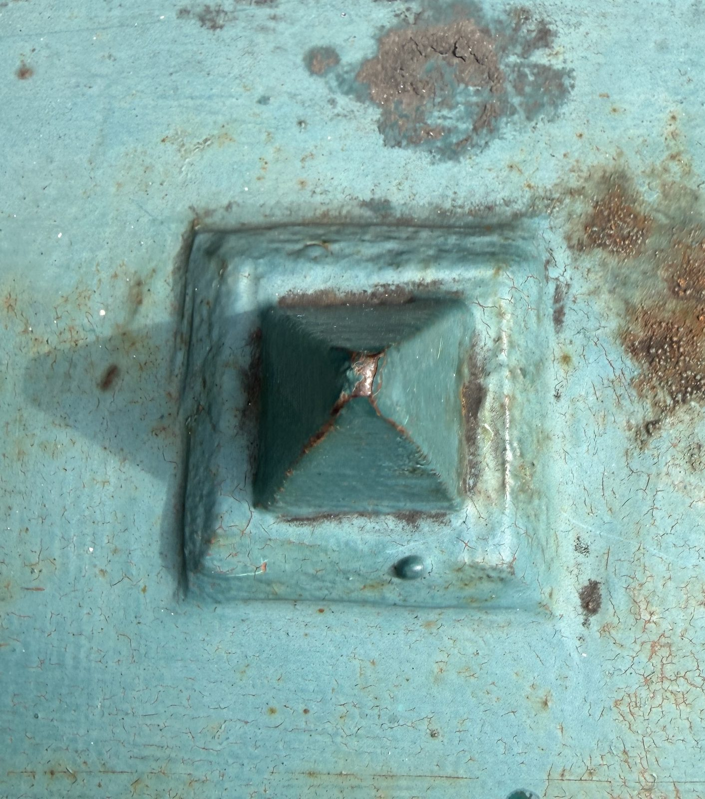
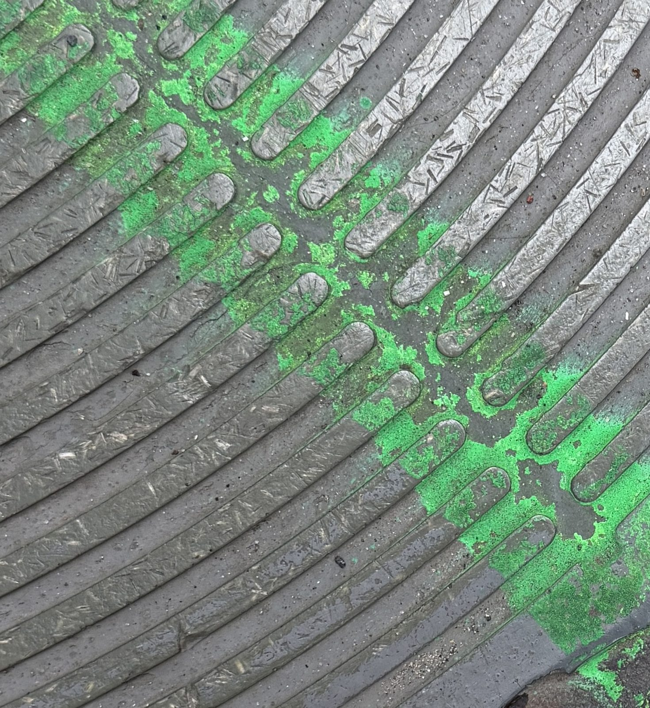

What a real error looks like, what a scam looks like, and what to do about either one.
Most of what goes wrong on a phone is not your fault, is not permanent, and is not interesting. Something did not load. Something needs a tap. Something is still thinking. Almost all of it is fixed by waiting a moment and trying again, and none of it damages the phone.
Then there is the other kind: the message that wants something from you, now, before you have had time to think about it. That one is not an error at all. It is somebody trying it on, and it is what the rest of this chapter is about.
You do not have to recognise every trick. There are too many and there are new ones every year. It is much easier to know what an ordinary, honest message from a phone looks like, because then anything that does not look like one stands out on its own.

A scam is not a kind of message. It is a script, and it will be read to you down whichever route reaches you. The same story about a locked account arrives as an email on Monday and as a phone call on Thursday, and it is the story that gives it away rather than the envelope it came in.
These are the six routes. You already use all of them for ordinary things, which is exactly why they are worth something to somebody dishonest.
Anything claiming to be from where your money is. The most common of the six and the most expensive to get wrong.
An address can be made to look like anybody's. The name at the top of an email is typed in, not proved.
A real voice, which is the whole advantage of it: it is much harder to put the phone down on a person than to close a window.
Short, and usually a link. There is no room in a text for anything that would help you check it.
The slow one. Nothing is asked for at all until somebody has spent weeks becoming your friend.
A window that appears over what you were reading and dresses itself up as a warning from the phone itself.
Here are all six. Read what each message says and have a guess at what is wrong with it before you press. The answer is underneath, and it stays hidden until you ask for it.
Nothing here is a test and nothing is counted. If you get all six wrong the chapter has still worked, because the thing worth taking away is not the six answers. It is that every one of them is the same answer in a different coat.
Six messages. Three of them are genuinely your phone talking to you and three are somebody trying it on. This one does keep count — not to mark you, but because a guess you can get wrong is the only kind that teaches you anything.
A small box appears while you are reading the news: “Could not load the page. There is no internet connection.” Underneath it is one button, and the button says Try again.
Real. It is dull, it names the one thing that did not work, and the only thing it offers you is another go. No clock, no capitals, nothing to fill in.
A text message: “URGENT: your account has been suspended. Verify your identity within 24 hours to avoid permanent closure.” There is a link to tap.
Scam. Which account? It does not say, because it does not know. Vague about you, frightening about the consequences, and it puts a clock on you — and nothing legitimate needs you to act within the next five minutes.
The screen says “Low Battery. 10% of battery remaining.” with two buttons: Low Power Mode and OK.
Real, and it is the most alarming-sounding real message your phone sends. It still passes all three: specific right down to the number, asking for nothing, and offering you the two ordinary things you might want to do about it.
An email, apparently from a delivery company: “We were unable to deliver your parcel. Pay the outstanding redelivery fee of $1.95 to reschedule.”
Scam, and the small amount is the trick. It is low enough to feel not worth thinking about, and the point was never the $1.95 — it was the card number you type to pay it. Check the tracking on the carrier's own site instead.
A quiet, tidy window on screen: “Your system is out of date. Click here to install the recommended update.” No capitals, no exclamation marks, no countdown.
Scam, and this is the one that catches people who have learned to look for shouting. It is dull, which is one test passed, but it is not specific — out of date by what? — and it wants you to click something, which the real ones never do. Your phone updates itself from Settings, where you went looking for it.
You try to open a website and get: “Safari cannot open the page because the server stopped responding.” with a Reload button.
Real. It names the program, it names what went wrong, and it blames a machine somewhere else rather than you. A real problem waits for you — this one will sit there as long as you like.
Here are the first two. Every one of the six is built out of the same four pieces, and once you can see the pieces you can take any message apart the same way — including one that has not been invented yet.
These two arrive by telephone rather than on a screen you had already opened. That changes how they feel and changes nothing else. Read them against the four pieces again: somebody it claims to be, a claim, a thing it wants, and — in the line at the foot of each card — the way round it.
Notice that both pieces of advice are the same instruction. Stop. Go back to the company by a route you already had: the number on the card in your pocket, the app you already use, the website you already know. The message is never allowed to supply its own address.
Five of the six pretend to be a person or a company. The pop-up pretends to be the phone. It arrives over whatever you were reading, in a box drawn to look like a warning from the machine itself, and it says something is badly wrong and gives you a number to call about it.
Hold it against the three tests at the start of the chapter. It is not dull, it is not specific, and it wants something — three out of three, and no real message has ever managed one.
If you have clicked something, or typed something in, or sent somebody money, you are in the company of a very large number of careful people. These things are designed by professionals to work on sensible adults having an ordinary day, and they do. What matters now is only what happens next, and all of it is straightforward.
